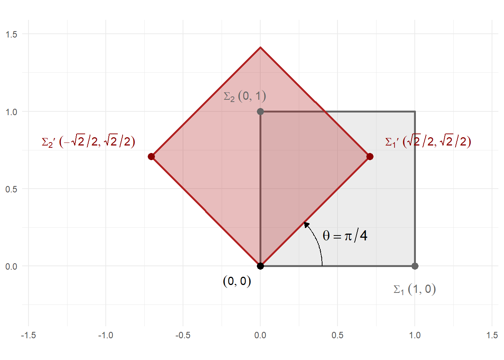

[,1] [,2] [,3] [,4]
[1,] 4 0 2 1
[2,] 3 1 4 2
[3,] 2 0 1 31 The Basics of Matrices
1.1 Matrix Notation
Let \(\mathbb{K}\) be a field and \(m, n \in \mathbb{N}\). An \(\mathbf{m} \times \mathbf{n}\) matrix \(\mathbf{A}\) over the field \(\mathbb{K}\) is a rectangular array of elements \(a_{ij} \in \mathbb{K}\) arranged in \(m\) rows and \(n\) columns, usually presented in the following form:
\[\mathbf{A} = [a_{ij}] = \begin{bmatrix} a_{11} & a_{12} & \cdots & a_{1n} \\ a_{21} & a_{22} & \cdots & a_{2n} \\ \vdots & \vdots & \ddots & \vdots \\ a_{m1} & a_{m2} & \cdots & a_{mn} \end{bmatrix}\]
where \(a_{ij}\) denotes the \((ij)\)-th entry (or element) of the matrix, corresponding to row \(i\) and column \(j\).
Matrix dimensions (or size) refer to the number of rows and columns of a matrix, denoted as \(m \times n\). The matrix \(\mathbf{A}\) is often written as \(\mathbf{A_{m \times n}}\) to make its dimensions explicit.
NOTE: While \(\mathbb{K}\) usually represents the real numbers (\(\mathbb{R}\)) or complex numbers (\(\mathbb{C}\)), it can also represent other fields.
The \(m\) rows of matrix \(\mathbf{A}\) are \(1 \times n\) matrices, also called row vectors (or row matrix):
\(\mathbf{r_1} = \begin{bmatrix} a_{11} & a_{12} & ... & a_{1n} \end{bmatrix}\)
\(\mathbf{r_2} = \begin{bmatrix} a_{21} & a_{22} & ... & a_{2n} \end{bmatrix}\)
\(\vdots\)
\(\mathbf{r_m} = \begin{bmatrix} a_{m1} & a_{m2} & ... & a_{mn} \end{bmatrix}\)
The \(n\) columns of \(\mathbf{A}\) are \(m \times 1\) matrices, are called column vectors (or column matrix):
\(\mathbf{c_1} = \begin{bmatrix} a_{11} \\ a_{21} \\ \vdots \\ a_{m1} \end{bmatrix}\), \(\mathbf{c_2} = \begin{bmatrix} a_{12} \\ a_{22} \\ \vdots \\ a_{m2} \end{bmatrix}\), …, \(\mathbf{c_n} = \begin{bmatrix} a_{1n} \\ a_{2n} \\ \vdots \\ a_{mn} \end{bmatrix}\)
Example: A \(3 \times 4\) Matrix
The matrix
\[\mathbf{A_{3 \times 4}}= \begin{bmatrix} 4 & 0 & 2 & 1\\ 3 & 1 & 4 & 2\\ 2 & 0 & 1 & 3 \end{bmatrix}\]
is a \(3 \times 4\) rectangular matrix over the field of real numbers (\(\mathbb{R}\)). Its first row vector and first column vector are, respectively:
\[ \mathbf{r_1} = \begin{bmatrix} 4 & 0 & 2 & 1 \end{bmatrix}, \qquad \mathbf{c_1} = \begin{bmatrix} 4 \\ 3 \\ 2 \end{bmatrix} \]
Implementation in R
We construct \(\mathbf{A}\) in R using the matrix() function. The entries of the matrix are first stored in a numeric vector named entries and then reshaped into a \(3 \times 4\) matrix. Since the values in the vector are listed in row-wise order, we set the parameter byrow = TRUE which fills the matrix one row at a time before moving to the next. This ensures that the computational representation of A in R matches its mathematical form exactly.
To verify the structure of the resulting object, we inspect its class and dimensions:
The function class(A) confirms that \(\mathbf{A}\) is a matrix object, while dim(A) returns its dimensions, \(3 \times 4\), consistent with the mathematical definition.
Matrix indexing in R follows the standard form [row, column], allowing individual rows and columns to be extracted directly. By default, R drops the two-dimensional structure of the result. To prevent this and preserve the matrix form, the argument drop = FALSE should be used.
To extract the first row vector \(\mathbf{r_1}\), we use:
r1 <- A[1, , drop = FALSE]
r1 [,1] [,2] [,3] [,4]
[1,] 4 0 2 1class(r1)[1] "matrix" "array" dim(r1)[1] 1 4Similarly, the first column vector \(\mathbf{c_1}\) is obtained by:
c1 <- A[, 1, drop = FALSE]
c1 [,1]
[1,] 4
[2,] 3
[3,] 2class(c1)[1] "matrix" "array" dim(c1)[1] 3 1
Example: The Pauli Matrices
The Pauli matrices are three \(2 \times 2\) complex matrices with fundamental applications in physics, particularly in quantum mechanics.
Let \(\mathbb{K} = \mathbb{C}\) (the field of complex numbers). The Pauli matrices are defined as:
\[\mathbf{\sigma_1} = \begin{bmatrix} 0 & 1 \\ 1 & 0 \end{bmatrix}, \quad \mathbf{\sigma_2} = \begin{bmatrix} 0 & -i \\ i & 0 \end{bmatrix}, \quad \mathbf{\sigma_3} = \begin{bmatrix} 1 & 0 \\ 0 & -1 \end{bmatrix}\]
Implementation in R
To represent these in R, we must account for the imaginary unit \(i\), which is denoted as \(i\) in R (e.g., \(0+1i\)). Because these matrices are \(2 \times 2\), we set the dimensions accordingly.
- Matrix \(\mathbf{\sigma_1}\)
[,1] [,2]
[1,] 0 1
[2,] 1 0- Matrix \(\mathbf{\sigma_2}\)
[,1] [,2]
[1,] 0+0i 0-1i
[2,] 0+1i 0+0i- Matrix \(\mathbf{\sigma_3}\)
[,1] [,2]
[1,] 1 0
[2,] 0 -1
Example: The Planar Rotation Matrix
When matrix entries are functions, the matrix is called a matrix-valued function. A fundamental example in linear algebra and geometry is the planar rotation matrix \(\mathbf{R(\theta)}\), which represents a counter-clockwise rotation by an angle \(\theta\) in \(\mathbb{R}^2\). Mathematically, it is defined as:
\[\mathbf{R(\theta)} = \begin{bmatrix} \cos(\theta) & -\sin(\theta) \\ \sin(\theta) & \cos(\theta) \end{bmatrix}\] For \(\theta = \frac{\pi}{4}\) (a rotation of \(45^\circ\)):
\[\mathbf{R\left(\frac{\pi}{4}\right)} = \begin{bmatrix} \cos\left(\frac{\pi}{4}\right) & -\sin\left(\frac{\pi}{4}\right) \\ \sin\left(\frac{\pi}{4}\right) & \cos\left(\frac{\pi}{4}\right) \end{bmatrix} = \begin{bmatrix} \frac{\sqrt{2}}{2} & -\frac{\sqrt{2}}{2} \\ \frac{\sqrt{2}}{2} & \frac{\sqrt{2}}{2} \end{bmatrix}\]
Implementation in R
# Define the angle of 45 degrees (pi/4 in radians)
theta <- pi / 4
# Use the function to construct the matrix
R(theta) [,1] [,2]
[1,] 0.7071068 -0.7071068
[2,] 0.7071068 0.7071068
The geometric effect of the planar rotation matrix \(\mathbf{R(\theta)}\) on a unit square for \(\theta = \pi/4\) is shown in Figure 1.1.

1.2 Basic Types of Matrices
1.2.1 The Zero Matrix
An \(m \times n\) matrix is called a zero matrix (or null matrix) if all its entries are zero, and is typically denoted by \(\mathbf{O_{m \times n}}\) or simply \(\mathbf{O}\):
\[\mathbf{O_{m \times n}} = \begin{bmatrix} 0 & 0 & \cdots & 0 \\ 0 & 0 & \cdots & 0 \\ \vdots & \vdots & \ddots & \vdots \\ 0 & 0 & \cdots & 0 \end{bmatrix}\]
Example: A \(3 \times 4\) Null Matrix
\[\mathbf{O_{3 \times 4}} = \begin{bmatrix} 0 & 0 & 0 & 0 \\ 0 & 0 & 0 & 0 \\ 0 & 0 & 0 & 0 \end{bmatrix}\]
Implementation in R
A null matrix is easily generated by specifying its dimensions and filling all entries with zero.
O <- matrix(0, nrow = 3, ncol = 4)
O [,1] [,2] [,3] [,4]
[1,] 0 0 0 0
[2,] 0 0 0 0
[3,] 0 0 0 0
1.2.2 The Ones Matrix
A ones matrix (also known as an all-ones matrix) is a matrix in which every entry is equal to one. It is typically denoted by \(\mathbf{J_{m \times n}}\) or simply \(\mathbf{J}\).
\[\mathbf{J_{m \times n}} = \begin{bmatrix} 1 & 1 & \cdots & 1 \\ 1 & 1 & \cdots & 1 \\ \vdots & \vdots & \ddots & \vdots \\ 1 & 1 & \cdots & 1 \end{bmatrix}\]
Example: A \(3 \times 4\) Ones Matrix
\[\mathbf{J_{3 \times 2}} = \begin{bmatrix} 1 & 1 & 1 & 1\\ 1 & 1 & 1 & 1\\ 1 & 1 &1 & 1 \end{bmatrix}\]
Implementation in R
A ones matrix is generated similarly to a zero matrix by specifying the value 1 as the data input.
J <- matrix(1, nrow = 3, ncol = 4)
J [,1] [,2] [,3] [,4]
[1,] 1 1 1 1
[2,] 1 1 1 1
[3,] 1 1 1 1
1.2.3 The Square Matrix
A matrix \(\mathbf{A}\) is called a square matrix if \(m = n\), that is, if it has an equal number of rows and columns. In this case, \(\mathbf{A}\) is said to be of order \(n\), denoted \(\mathbf{A_{n \times n}}\) or simply \(\mathbf{A_n}\).
\[\mathbf{A_{n \times n}} = \begin{bmatrix} \boldsymbol{a_{11}} & a_{12} & \cdots & a_{1n} \\ a_{21} & \boldsymbol{a_{22}} & \cdots & a_{2n} \\ \vdots & \vdots & \ddots & \vdots \\ a_{n1} & a_{n2} & \cdots & \boldsymbol{a_{nn}} \end{bmatrix}\]
- The main diagonal (or principal diagonal) of this matrix consists of the entries \(a_{ij}\) for which the row index equals the column index, that is, \(i = j\) (shown in bold in the matrix), denoted:
\[\text{diag}(\mathbf{A}) = \{a_{11}, a_{22}, \dots, a_{nn}\}\]
All remaining entries, where \(i \neq j\), are referred to as off-diagonal elements.
REMARK: Although the main diagonal is most naturally associated with square matrices, it is defined for any \(m \times n\) rectangular matrix, consisting of the entries \(a_{ii}\) for \(i = 1, 2, \ldots, \min(m, n)\).
- Case 1: Horizontal Rectangular Matrix (\(m < n\))
For a \(3 \times 4\) matrix, where \(\min(3, 4) = 3\), the main diagonal contains exactly three entries. The diagonal terminates before reaching the final column.
\[\mathbf{A_{3 \times 4}} = \begin{bmatrix} \boldsymbol{a_{11}} & a_{12} & a_{13} & a_{14} \\ a_{21} & \boldsymbol{a_{22}} & a_{23} & a_{24} \\ a_{31} & a_{32} & \boldsymbol{a_{33}} & a_{34} \end{bmatrix}\]
For example:
\[{\mathbf{A_{3 \times 4}}} = \begin{bmatrix} \mathbf{4} & 0 & 2 & 1 \\ 3 & \mathbf{1} & 4 & 2 \\ 2 & 0 & \mathbf{1} & 3 \end{bmatrix}\]
In this instance, \(\text{diag}(\mathbf{A}) = \{4, 1, 1\}\).
- Case 2: Vertical Rectangular Matrix (\(m > n\))
For a \(4 \times 3\) matrix, where \(\min(4, 3) = 3\), the diagonal also contains three entries. Here, the diagonal is exhausted before reaching the final row.
\[\mathbf{A_{4 \times 3}} = \begin{bmatrix} \boldsymbol{a_{11}} & a_{12} & a_{13} \\ a_{21} & \boldsymbol{a_{22}} & a_{23} \\ a_{31} & a_{32} & \boldsymbol{a_{33}} \\ a_{41} & a_{42} & a_{43} \end{bmatrix}\]
For example:
\[\mathbf{A_{4 \times 3}} = \begin{bmatrix} \mathbf{2} & 1 & 0 \\ 3 & \mathbf{-1} & 4 \\ 1 & 2 & \mathbf{5} \\ 0 & 3 & 1 \end{bmatrix}\]
Here, \(\text{diag}(\mathbf{A}) = \{2, -1, 5\}\). Note that the fourth row contains no diagonal entry because the index \(i=4\) has no corresponding column index \(j=4\).
- In a square matrix \(\mathbf{A}\) of order \(n\), the anti-diagonal (also known as the secondary diagonal) consists of the entries \(a_{ij}\) for which \(i + j = n + 1\), running from the upper-right corner to the lower-left corner.
\[\mathbf{A_{n \times n}} = \begin{bmatrix} a_{11} & a_{12} & \cdots & a_{1 \ (n-1)} & \boldsymbol{a_{1n}} \\ a_{21} & a_{22} & \cdots & \boldsymbol{a_{2 \ (n-1)}} & a_{2n} \\ \vdots & \vdots & \ddots & \vdots & \vdots \\ a_{(n-1) \ 1} & \boldsymbol{a_{(n-1) \ 2}} & \cdots & a_{(n-1) \ (n-1)} & a_{(n-1) \ n} \\ \boldsymbol{a_{n1}} & a_{n2} & \cdots & a_{n \ (n-1)} & a_{nn} \end{bmatrix}\]
The anti-diagonal entries are shown in bold in the matrix:
\[\text{anti-diag}(\mathbf{A}) = \{a_{1n}, a_{2 \ (n-1)}, \dots, a_{(n-1) \ 2}, a_{n1}\}\]
- The trace of a square matrix \(\mathbf{A_{n \times n}}\) is the sum of its main diagonal entries, denoted by \(\text{tr}(\mathbf{A})\):
\[\text{tr}(\mathbf{A}) = a_{11} + a_{22} + \cdots + a_{nn} = \sum_{i=1}^{n} a_{ii}\]
The trace is defined only for square matrices.
Example: A \(3 \times 3\) Square Matrix
Consider the following square matrix of order 3:
\[\mathbf{A_{3 \times 3}} = \begin{bmatrix} \mathbf{5} & 1 & 0 \\ 3 & \mathbf{-1} & 2 \\ 4 & 0 & \mathbf{-1} \end{bmatrix}\]
The main diagonal entries (shown in bold) are \(a_{11} = 5\), \(a_{22} = -1\), and \(a_{33} = -1\), hence
\[\text{diag}(\mathbf{A}) = \{5, -1, -1\}\]
\[\text{tr}(\mathbf{A}) = 5 + (-1) + (-1) = 3\]
The anti-diagonal entries, for which \(i + j = 4\), are \(a_{13} = 0\), \(a_{22} = -1\), and \(a_{31} = 4\), hence
\[\text{anti-diag}(\mathbf{A}) = \{0, -1, 4\}\]
Note that \(a_{22} = -1\) lies on both the main diagonal and the anti-diagonal. This occurs in every square matrix of odd order, where the central entry belongs to both diagonals.
Implementation in R
We construct \(\mathbf{A}\) in R and use the built-in diag() function to extract its main diagonal entries.
[,1] [,2] [,3]
[1,] 5 1 0
[2,] 3 -1 2
[3,] 4 0 -1# Main diagonal
diag(A)[1] 5 -1 -1The trace is not available as a standalone function in base R, but is straightforwardly computed as a sum.
Extracting the anti-diagonal in R requires indexing. This can be achieved using cbind() to pair row and column indices appropriately:
1.2.4 The Diagonal Matrix
A diagonal matrix \(\mathbf{A}\) is a square matrix in which all off-diagonal entries are zero, that is, \(a_{ij} = 0\) for all \(i \neq j\):
\[\mathbf{A_{n \times n}} = \begin{bmatrix} a_{11} & 0 & \dots & 0 \\ 0 & a_{22} & \dots & 0 \\ \vdots & \vdots & \ddots & \vdots \\ 0 & 0 & \dots & a_{nn} \end{bmatrix}\]
Example: A \(3 \times 3\) Diagonal Matrix
\[\mathbf{A_{3\times 3}} = \begin{bmatrix} 4 & 0 & 0\\ 0 & -1 & 0\\ 0 & 0 & -5 \end{bmatrix}\]
with
\(\text{diag}(\mathbf{A}) = \{4, -1, -5\}\)
\(\text{tr}(\mathbf{A}) = 4 + (-1) + (-5) = -2\)
\(\text{anti-diag}(\mathbf{A}) = \{0, -1, 0\}\)
Implementation in R
In R, a diagonal matrix can be constructed using the diag() function.
# Main diagonal
diag(A) [1] 4 -1 -5
1.2.5 The Anti-Diagonal Matrix
An anti-diagonal matrix (or skew-diagonal matrix) is a square matrix where all entries are zero except for those on the diagonal going from the lower-left corner to the upper-right corner.
Formally, a square matrix \(\mathbf{A}\) is anti-diagonal if \(a_{ij} = 0\) whenever \(i + j \neq n + 1\):
\[\mathbf{A_{n \times n}} = \begin{bmatrix} 0 & 0 & \cdots & 0 & a_{1n} \\ 0 & 0 & \cdots & a_{2 \ (n-1)} & 0 \\ \vdots & \vdots & \ddots & \vdots & \vdots \\ 0 & a_{(n-1) \ 2} & \cdots & 0 & 0 \\ a_{n1} & 0 & \cdots & 0 & 0 \end{bmatrix}\]
NOTE: An anti-diagonal matrix \(\mathbf{A}\) of size \(n \times n\) has nonzero entries only on the anti-diagonal (from the top-right to the bottom-left). The trace of \(\mathbf{A}\) is guaranteed to be zero if \(n\) is even, but it may be non-zero if \(n\) is odd.
Example: A \(3 \times 3\) Anti-Diagonal Matrix
In a \(3 \times 3\) matrix, the anti-diagonal entries are those where \(i + j = 4\):
\[\mathbf{A_{3\times 3}} =\begin{bmatrix} 0 & 0 & 7\\ 0 & 2 & 0\\ -3 & 0 & 0 \end{bmatrix}\]
with
\(\text{diag}(\mathbf{A}) = \{0, 2, 0\}\)
\(\text{tr}(\mathbf{A}) = 0 + 2 + 0 = 2\)
\(\text{anti-diag}(\mathbf{A}) = \{7, 2, -3\}\)
Implementation in R
[,1] [,2] [,3]
[1,] 0 0 7
[2,] 0 2 0
[3,] -3 0 0# Main diagonal
diag(A) [1] 0 2 0
1.2.6 The Triangular Matrices
A square matrix \(\mathbf{A}\) is called upper triangular if all entries below the main diagonal are zero, that is, \(a_{ij} = 0\) for all \(i > j\).
\[\mathbf{A_{upper}} = \begin{bmatrix} a_{11} & a_{12} & \dots & a_{1n} \\ 0 & a_{22} & \dots & a_{2n} \\ \vdots & \vdots & \ddots & \vdots \\ 0 & 0 & \dots & a_{nn} \end{bmatrix}\]
Conversely, a square matrix \(\mathbf{A}\) is called lower triangular if all entries above the main diagonal are zero, that is, \(a_{ij} = 0\) for all \(i < j\).
\[\mathbf{A_{lower}} = \begin{bmatrix} a_{11} & 0 & \dots & 0 \\ a_{21} & a_{22} & \dots & 0 \\ \vdots & \vdots & \ddots & \vdots \\ a_{n1} & a_{n2} & \dots & a_{nn} \end{bmatrix}\]
NOTE: A square matrix that is simultaneously upper and lower triangular has zeros both above and below the main diagonal, and is therefore necessarily a diagonal matrix.
Example: \(3 \times 3\) Triangular Matrices
\[\mathbf{A_{upper}} = \begin{bmatrix} \mathbf{2} & 3 & -1 \\ 0 & \mathbf{5} & 4 \\ 0 & 0 & \mathbf{7} \end{bmatrix}, \qquad \mathbf{A_{lower}} = \begin{bmatrix} \mathbf{2} & 0 & 0 \\ 3 & \mathbf{5} & 0 \\ -1 & 4 & \mathbf{7} \end{bmatrix}\]
Implementation in R
- The upper triangular matrix
[,1] [,2] [,3]
[1,] 2 3 -1
[2,] 0 5 4
[3,] 0 0 7- The lower triangular matrix
[,1] [,2] [,3]
[1,] 2 0 0
[2,] 3 5 0
[3,] -1 4 7
1.2.7 The Identity Matrix
An identity matrix, typically denoted as \(\mathbf{I}\), is a square matrix whose entries are given by the Kronecker delta \(\delta_{ij}\):
\[\delta_{ij} = \begin{cases} 1 & \text{if } i = j \\ 0 & \text{if } i \neq j \end{cases}\]
That is, it has ones on the main diagonal and zeros everywhere else. In explicit form, it is written as:
\[\mathbf{I_{n \times n}} = \begin{bmatrix} 1 & 0 & \dots & 0 \\ 0 & 1 & \dots & 0 \\ \vdots & \vdots & \ddots & \vdots \\ 0 & 0 & \dots & 1 \end{bmatrix}\]
Thus, \(\mathbf{I_{n \times n}}\) is a special case of a diagonal matrix where all diagonal entries equal to 1.
Example: A \(3 \times 3\) Identity Matrix
The identity matrix of order 3 is written as:
\[\mathbf{I_{3 \times 3}} = \begin{bmatrix} 1 & 0 & 0\\ 0 & 1 & 0\\ 0 & 0 & 1 \end{bmatrix}\]
Implementation in R
In R, the diag() function is used to generate identity matrices. When passed a single integer \(n\), it returns an \(n \times n\) identity matrix.
I <- diag(3)
I [,1] [,2] [,3]
[1,] 1 0 0
[2,] 0 1 0
[3,] 0 0 1
1.2.8 The Permutation Matrix
A permutation matrix is a square matrix with exactly one entry equal to \(1\) in each row and each column, and \(0\) elsewhere. Equivalently, it is obtained by permuting the rows (or columns) of an identity matrix.
Formally, let \(\sigma\) be a permutation of the set \(\{1, 2, \dots, n\}\). The associated permutation matrix
\[\mathbf{P_{n \times n}}= [p_{ij}] = \begin{bmatrix} p_{11} & p_{12} & \dots & p_{1n} \\ p_{21} & p_{22} & \dots & p_{2n} \\ \vdots & \vdots & \ddots & \vdots \\ p_{n1} & p_{n2} & \dots & p_{nn} \end{bmatrix}\]
is defined entry-wise by:
\[\quad p_{ij} = \begin{cases} 1 & \text{if } j = \sigma(i) \\ 0 & \text{otherwise} \end{cases}\]
This definition states that in each row \(i\), the entry \(1\) is placed in column \(\sigma(i)\). This is equivalent to saying that \(\mathbf{P}\) is formed by taking the rows of the identity matrix \(\mathbf{I_n}\) and reordering them according to \(\sigma\).
Example: A \(3 \times 3\) Permutation Matrix
Let us consider a permutation \(\sigma\) of the set \(\{1, 2, 3\}\) defined as:
\[\sigma(1) = 2, \quad \sigma(2) = 1, \quad \sigma(3) = 3\]
We evaluate each row (\(i\)) against each column (\(j\)):
- For row \(i = 1\):
\[\begin{aligned} j = 1 \neq \sigma(1) \rightarrow p_{11} = 0,\ \ \ j = 2 = \sigma(1) \rightarrow \boxed{p_{12} = 1}, \ \ \ j = 3 \neq \sigma(1) \rightarrow p_{13} = 0 \end{aligned}\]
- For row \(i = 2\):
\[\begin{aligned} j = 1 = \sigma(2) \rightarrow \boxed{p_{21} = 1} ,\ \ \ j = 2 \neq \sigma(2) \rightarrow p_{22} = 0 ,\ \ \ j = 3 \neq \sigma(2) \rightarrow p_{23} = 0 ,\ \ \ \end{aligned}\]
- For row \(i = 3\):
\[\begin{aligned} j = 1 \neq \sigma(3) \rightarrow p_{31} = 0,\ \ \ j = 2 \neq \sigma(3) \rightarrow p_{32} = 0,\ \ \ j = 3 = \sigma(3) \rightarrow \boxed{p_{33} = 1} \end{aligned}\]
By arranging these values according to the given permutation, we construct the corresponding permutation matrix \(P_{3 \times 3}\):
\[\mathbf{P} = \begin{bmatrix} 0 & 1 & 0 \\ 1 & 0 & 0 \\ 0 & 0 & 1 \end{bmatrix}\]
This matrix is obtained from the identity matrix by swapping the first and second rows, while leaving the third row unchanged. Hence, it is a permutation matrix corresponding to \(\sigma\).
Implementation in R
# permutation matrix (swap rows 1 and 2 of identity matrix)
P <- I[c(2, 1, 3), ]
P [,1] [,2] [,3]
[1,] 0 1 0
[2,] 1 0 0
[3,] 0 0 1
1.2.9 The Symmetric Matrix
A square matrix \(\mathbf{A}\) is symmetric if its entries satisfy:
\[a_{ij} = a_{ji} \quad \text{for all } i, j\]
This condition implies that the matrix is symmetric with respect to its main diagonal. Equivalently, interchanging its rows and columns leaves the matrix unchanged.
In its general form, the entries below the main diagonal are reflections of those above it:
\[\mathbf{A} = \begin{bmatrix} a_{11} & a_{12} & \dots & a_{1n} \\ a_{12} & a_{22} & \dots & a_{2n} \\ \vdots & \vdots & \ddots & \vdots \\ a_{1n} & a_{2n} & \dots & a_{nn} \end{bmatrix}\]
Example: A \(3 \times 3\) Symmetric Matrix
Consider the following symmetric matrix \(\mathbf{A}\) of order 3:
\[\mathbf{A_{3\times 3}} = \begin{bmatrix} 13 & -4 & 2\\ -4 & 11 & -2\\ 2 & -2 & 8 \end{bmatrix}\]
In this matrix, the entries at positions (1,2) and (2,1) are both -4, the entries at positions (1,3) and (3,1) are both 2, and the entries at positions (2,3) and (3,2) are both -2. This reflects the symmetry property.
Implementation in R
[,1] [,2] [,3]
[1,] 13 -4 2
[2,] -4 11 -2
[3,] 2 -2 8
1.2.10 The Antisymmetric Matrix
A square matrix \(\mathbf{A}\) is antisymmetric (or skew-symmetric) if its entries satisfy:\[a_{ij} = -a_{ji} \quad \text{for all } i, j\]
A key property of antisymmetric matrices is that all elements on the main diagonal must be zero, because for \(i=j\), the condition \(a_{ii} = -a_{ii}\) can only be true if \(a_{ii} = 0\).
In its general form, entries below the main diagonal are the negative reflections of those above it:
\[\mathbf{A} = \begin{bmatrix} 0 & a_{12} & \dots & a_{1n} \\ -a_{12} & 0 & \dots & a_{2n} \\ \vdots & \vdots & \ddots & \vdots \\ -a_{1n} & -a_{2n} & \dots & 0 \end{bmatrix}\]
Example: A \(3 \times 3\) Antisymmetric Matrix
Consider the following antisymmetric matrix \(\mathbf{A}\) of order 3:
\[\mathbf{A_{3\times 3}} =\begin{bmatrix}0 & 5 & -2\\ -5 & 0 & 1\\ 2 & -1 & 0 \end{bmatrix}\]
In this matrix, notice that the diagonal is all zeros. Furthermore, the entries at positions (1,2) and (2,1) are 5 and -5, (1,3) and (3,1) are -2 and 2, and (2,3) and (3,2) are 1 and -1. This reflects the antisymmetry property.
Implementation in R
[,1] [,2] [,3]
[1,] 0 5 -2
[2,] -5 0 1
[3,] 2 -1 0
1.3 Operations on Matrices
1.3.1 Equality of Matrices
Any meaningful algebra requires a precise notion of equality. Two matrices \(\mathbf{A} = [a_{ij}]_{m \times n}\) and \(\mathbf{B} = [b_{ij}]_{p \times q}\) are equal, written \(\mathbf{A} = \mathbf{B}\), if and only if they have the same size and the corresponding entries are equal:
- \(m = p\) and \(n = q\)
- \(a_{ij} = b_{ij}\) for all \(i, j\)
Matrices that are not equal are called different. Thus, matrices of different sizes are always different.
Example: Equal Matrices
Let
\[\mathbf{A} = \begin{bmatrix} 2 & 5 \\ -1 & 0 \end{bmatrix}, \quad \mathbf{B} = \begin{bmatrix} 2 & 5 \\ -1 & 0 \end{bmatrix}\]
Since both matrices are \(2 \times 2\) and every entry matches its counterpart, we conclude that \(\mathbf{A} = \mathbf{B}\).
Implementation in R
We construct both matrices and verify equality.
First, we confirm that \(A\) and \(B\) have the same dimensions:
[1] TRUE TRUEThen, we verify that every corresponding entry satisfies \(a_{ij} = b_{ij}\):
# Check entry-wise equality
all(A == B) # TRUE — all entries match[1] TRUE
1.3.2 Matrix Addition
Given two \(m \times n\) matrices \(\mathbf{A} = [a_{ij}]\) and \(\mathbf{B} = [b_{ij}]\), their sum \(\mathbf{A} + \mathbf{B}\) is the \(m \times n\) matrix defined by:
\[\mathbf{A} + \mathbf{B} = [a_{ij} + b_{ij}]\]
The sum is obtained by adding corresponding entries; therefore, matrix addition is defined only when the matrices have the same dimensions. In expanded form, the addition is expressed as:
\[\begin{bmatrix} a_{11} & \cdots & a_{1n} \\ \vdots & \ddots & \vdots \\ a_{m1} & \cdots & a_{mn} \end{bmatrix} + \begin{bmatrix} b_{11} & \cdots & b_{1n} \\ \vdots & \ddots & \vdots \\ b_{m1} & \cdots & b_{mn} \end{bmatrix} = \begin{bmatrix} a_{11} + b_{11} & \cdots & a_{1n} + b_{1n} \\ \vdots & \ddots & \vdots \\ a_{m1} + b_{m1} & \cdots & a_{mn} + b_{mn} \end{bmatrix}\]
Properties of Matrix Addition
Let \(\mathbf{A}\), \(\mathbf{B}\), and \(\mathbf{C}\) be \(m \times n\) matrices, and let \(\mathbf{O}\) denote the \(m \times n\) zero matrix.
1. Commutative Property: The order in which we add matrices does not change the result.
\[\mathbf{A} + \mathbf{B} = \mathbf{B} + \mathbf{A}\]
2. Associative Property: When adding three or more matrices, the grouping of the matrices does not change the result.
\[(\mathbf{A} + \mathbf{B}) + \mathbf{C} = \mathbf{A} + (\mathbf{B} + \mathbf{C})\]
3. Additive Identity: Adding the zero matrix \(\mathbf{O}\) to any matrix \(\mathbf{A}\) leaves \(\mathbf{A}\) unchanged.
\[\mathbf{A} + \mathbf{O} = \mathbf{A}\] 4. Additive Inverse: For every matrix \(A\), there is a matrix \(-\mathbf{A}\) (where each entry is the negation of the corresponding entry in \(\mathbf{A}\)) such that their sum is the zero matrix.
\[\mathbf{A} + (-\mathbf{A}) = \mathbf{O}\]
Example: Addition of Matrices
Let \(\mathbf{A}\) and \(\mathbf{B}\) be the following \(3 \times 2\) matrices:
\[\mathbf{A} = \begin{bmatrix} 2 & -1 \\ 0 & 4 \\ 5 & 3 \end{bmatrix}, \quad \mathbf{B} = \begin{bmatrix} 1 & 7 \\ -2 & 0 \\ 4 & -1 \end{bmatrix}\]
To find \(A + B\), we add the entries in the corresponding row and column positions.
\[\mathbf{A} + \mathbf{B} = \begin{bmatrix} 2 & -1 \\ 0 & 4 \\ 5 & 3 \end{bmatrix} + \begin{bmatrix} 1 & 7 \\ -2 & 0 \\ 4 & -1 \end{bmatrix} =\begin{bmatrix} 2+1 & -1+7 \\ 0+(-2) & 4+0 \\ 5+4 & 3+(-1) \end{bmatrix} = \begin{bmatrix} 3 & 6 \\ -2 & 4 \\ 9 & 2 \end{bmatrix}\]
Implementation in R
# Perform the addition
A + B [,1] [,2]
[1,] 3 6
[2,] -2 4
[3,] 9 2
1.3.3 Scalar Multiplication of a Matrix
Let \(\mathbf{A} = [a_{ij}]\) be an \(m \times n\) matrix with entries from a field \(\mathbb{K}\), and let \(\lambda \in \mathbb{K}\). The scalar multiple of by \(\lambda\), is the \(m \times n\) matrix obtained by multiplying each entry of \(\mathbf{A}\) by \(\lambda\). Formally:
\[\lambda \mathbf{A} = [\lambda \cdot a_{ij}]\]for all \(1 \leq i \leq m\) and \(1 \leq j \leq n\).
Explicitly, the operation is distributed across all entries:
\[\lambda \mathbf{A} = \lambda \begin{bmatrix} a_{11} & a_{12} & \cdots & a_{1n} \\ a_{21} & a_{22} & \cdots & a_{2n} \\ \vdots & \vdots & \ddots & \vdots \\ a_{m1} & a_{m2} & \cdots & a_{mn} \end{bmatrix} = \begin{bmatrix} \lambda a_{11} & \lambda a_{12} & \cdots & \lambda a_{1n} \\ \lambda a_{21} & \lambda a_{22} & \cdots & \lambda a_{2n} \\ \vdots & \vdots & \ddots & \vdots \\ \lambda a_{m1} & \lambda a_{m2} & \cdots & \lambda a_{mn} \end{bmatrix}\]
Properties of Scalar Multiplication
If \(\mathbf{A}\) and \(\mathbf{B}\) are \(m \times n\) matrices and \(\lambda\) and \(\mu\) are scalars, the following algebraic properties hold:
Distributivity Over Matrix Addition: A scalar distributes across the sum of two matrices.
\[\lambda(\mathbf{A} + \mathbf{B}) = \lambda \mathbf{A} + \lambda \mathbf{B}\]
Distributivity Over Scalar Addition: A scalar distributes over matrix addition.
\[(\lambda + \mu)\mathbf{A} = \lambda \mathbf{A} + \mu \mathbf{A}\]
Associativity of Scalar Multiplication: Multiplying a matrix by two scalars sequentially is equivalent to multiplying the scalars together first.
\[\lambda(\mu \mathbf{A}) = (\lambda \mu)\mathbf{A}\]
Additive Inverse Property: Multiplying a matrix \(\mathbf{A}\) by −1 gives its additive inverse, \(-\mathbf{A}\).
\[(-1)\mathbf{A} = -\mathbf{A}\]
Zero Properties: Multiplication by the zero scalar, or of the zero matrix, always yields the zero matrix.
\[0\mathbf{A} = \mathbf{O_{m \times n}}\] and
\[λ \cdot \mathbf{O_{m \times n}}=\mathbf{O_{m \times n}}\]
Example: Multiplication of a Matrix by a real number
Consider the scalar \(\lambda = 3\) and the \(3 \times 2\) matrix \(\mathbf{A}\):
\[\mathbf{A} = \begin{bmatrix} 2 & -1 \\ 0 & 4 \\ 5 & 3 \end{bmatrix}\]
To find the scalar multiple \(\lambda \mathbf{A}\), we multiply each entry of \(\mathbf{A}\) by \(3\):
\[\lambda \mathbf{A} = 3 \begin{bmatrix} 2 & -1 \\ 0 & 4 \\ 5 & 3 \end{bmatrix} = \begin{bmatrix} 3 \cdot 2 & 3\cdot (-1) \\ 3 \cdot 0 & 3 \cdot 4 \\ 3 \cdot 5 & 3 \cdot 3 \end{bmatrix} = \begin{bmatrix} 6 & -3 \\ 0 & 12 \\ 15 & 9 \end{bmatrix}\]
Implementation in R
In R, the * operator performs entry-wise multiplication when applied to a matrix and a scalar.
[,1] [,2]
[1,] 6 -3
[2,] 0 12
[3,] 15 9
Example: Multiplication of a Matrix by a complex number
Let the scalar \(\lambda = 2 + 3i \in \mathbb{C}\) and the \(2 \times 2\) matrix \(\mathbf{A}\) be defined as:
\[\mathbf{A} = \begin{bmatrix} 1 & i \\ 2 & 1 - i \end{bmatrix}\]
The scalar multiple \(\lambda \mathbf{A}\) is calculated by multiplying each entry of \(\mathbf{A}\) by \((2 + 3i)\):
\[\lambda \mathbf{A} = (2 + 3i) \begin{bmatrix} 1 & i \\ 2 & 1 - i \end{bmatrix} = \begin{bmatrix} (2 + 3i) \cdot 1 & (2 + 3i) \cdot i \\ (2 + 3i) \cdot 2 & (2 + 3i) \cdot (1 - i) \end{bmatrix} = \begin{bmatrix} 2 + 3i & -3 + 2i \\ 4 + 6i & 5 + i \end{bmatrix}\]
The imaginary unit \(i\) satisfies the two following properties:
- The definition of the imaginary unit \(i\) is:
\[i^2 = -1\]
- If \(c\) is a nonnegative real number (\(c≥0\)), then the square root of a negative number can be written using the imaginary unit \(i\):
\[\sqrt{-c} = i\sqrt{c}\]
For example, \(\sqrt{-25} = i\sqrt{25} = 5i\).
Implementation in R
[,1] [,2]
[1,] 2+3i -3+2i
[2,] 4+6i 5+1i
1.3.4 Linear Combination of Matrices
Given \(k\) matrices \(\mathbf{A_1}, \mathbf{A_2}, \dots, \mathbf{A_k}\) of size \(m \times n\), a linear combination of these matrices is any expression of the form:
\[\lambda_1 \mathbf{A_1} + \lambda_2 \mathbf{A_2} + \cdots + \lambda_k \mathbf{A_k} = \sum_{i=1}^{k} \lambda_i \mathbf{A_i}\]
where \(\lambda_1, \lambda_2, \ldots, \lambda_k\) are scalars.
Example: Linear Combination of \(3 \times 2\) Matrices
Let
\[\mathbf{A_1} = \begin{bmatrix} 1 & 2 \\ 3 & 4 \\ 5 & 6 \end{bmatrix}, \quad \mathbf{A_2} = \begin{bmatrix} 2 & 0 \\ 1 & 3 \\ 4 & 2 \end{bmatrix}, \quad \mathbf{A_3} = \begin{bmatrix} 0 & 1 \\ 2 & 1 \\ 3 & 0 \end{bmatrix}\]
be \(3 \times 2\) matrices over \(\mathbb{R}\), and let \(\lambda_1 = 2, \quad \lambda_2 = -1, \quad \lambda_3 = 3\) \(\in \mathbb{R}\). The linear combination of the three matrices is:
\[\begin{aligned} \sum_{i=1}^{3} \lambda_i \mathbf{A_i} &= \lambda_1 \mathbf{A_1} + \lambda_2 \mathbf{A_2} + \lambda_3 \mathbf{A_3} \\ &= 2 \begin{bmatrix} 1 & 2 \\ 3 & 4 \\ 5 & 6 \end{bmatrix} - 1 \begin{bmatrix} 2 & 0 \\ 1 & 3 \\ 4 & 2 \end{bmatrix} + 3 \begin{bmatrix} 0 & 1 \\ 2 & 1 \\ 3 & 0 \end{bmatrix} \\ &= \begin{bmatrix} 2 & 4 \\ 6 & 8 \\ 10 & 12 \end{bmatrix} + \begin{bmatrix} -2 & 0 \\ -1 & -3 \\ -4 & -2 \end{bmatrix} + \begin{bmatrix} 0 & 3 \\ 6 & 3 \\ 9 & 0 \end{bmatrix} \\ &= \begin{bmatrix} 0 & 7 \\ 11 & 8 \\ 15 & 10 \end{bmatrix} \end{aligned}\]
The resulting matrix is again a \(3 \times 2\) matrix over \(\mathbb{R}\), as expected. Both scalar multiplication and matrix addition preserve dimensions, so any linear combination of \(m \times n\) matrices is itself an \(m \times n\) matrix.
Implementation in R
# Calculate the linear combination
2 * A1 - 1 * A2 + 3 * A3 [,1] [,2]
[1,] 0 7
[2,] 11 8
[3,] 15 10
Example: Linear Combination of Pauli Matrices
The Pauli matrices are a standard set of three \(2 \times 2\) complex matrices:
\[\mathbf{\sigma_1} = \begin{bmatrix} 0 & 1 \\ 1 & 0 \end{bmatrix}, \quad \mathbf{\sigma_2} = \begin{bmatrix} 0 & -i \\ i & 0 \end{bmatrix}, \quad \mathbf{\sigma_3} = \begin{bmatrix} 1 & 0 \\ 0 & -1 \end{bmatrix}\]
For scalars \(\lambda_1 = x\), \(\lambda_2 = y\), and \(\lambda_3 = z\), \(\in \mathbb{R}\), the linear combination is:
\[\begin{aligned} \sum_{i=1}^{3} \lambda_i \mathbf{\sigma_i} &= x \mathbf{\sigma_1} + y \mathbf{\sigma_2} + z \mathbf{\sigma_3} \\ &= x \begin{bmatrix} 0 & 1 \\ 1 & 0 \end{bmatrix} + y \begin{bmatrix} 0 & -i \\ i & 0 \end{bmatrix} + z \begin{bmatrix} 1 & 0 \\ 0 & -1 \end{bmatrix} \\ &= \begin{bmatrix} 0 & x \\ x & 0 \end{bmatrix} + \begin{bmatrix} 0 & -iy \\ iy & 0 \end{bmatrix} + \begin{bmatrix} z & 0 \\ 0 & -z \end{bmatrix} \\ &= \begin{bmatrix} z & x - iy \\ x + iy & -z \end{bmatrix} \end{aligned}\]
For \(x = 2\), \(y = 4\), and \(z = -3\):
\[\begin{aligned} \begin{bmatrix} z & x - iy \\ x + iy & -z \end{bmatrix} &= \begin{bmatrix} -3 & 2 - 4i \\ 2 + 4i & 3 \end{bmatrix} \end{aligned}\]
Implementation in R
x * sigma_1 + y * sigma_2 + z * sigma_3 [,1] [,2]
[1,] -3+0i 2-4i
[2,] 2+4i 3+0i
1.3.5 Hadamard Product
The Hadamard product is the entry-wise multiplication of two matrices \(\mathbf{A}\) and \(\mathbf{B}\) of the same dimensions.
Formally, if \(\mathbf{A} = [a_{ij}]\) and \(\mathbf{B} = [b_{ij}]\) are \(m \times n\) matrices over a field \(\mathbb{K}\), then:
\[\mathbf{A} \odot \mathbf{B} = [a_{ij} \cdot b_{ij}]\]
for all \(1 \leq i \leq m\) and \(1 \leq j \leq n\).
Properties of the Hadamard Product
If \(A\) and \(B\) are \(m \times n\) matrices and \(\lambda\) is scalar, the following algebraic properties hold:
1. Commutative: The order of matrices does not change the result.
\[\mathbf{A} \odot \mathbf{B} = \mathbf{B} \odot \mathbf{A}\]
2. Associative: Grouping does not affect the final product.
\[\mathbf{A} \odot (\mathbf{B} \odot \mathbf{C}) = (\mathbf{A} \odot \mathbf{B}) \odot \mathbf{C}\]
3. Distributive: The product distributes over matrix addition.
\[\mathbf{A} \odot (\mathbf{B} + \mathbf{C}) = \mathbf{A} \odot \mathbf{B} + \mathbf{A} \odot \mathbf{C}\]
4. Scalar Interaction: A scalar can be applied to either matrix or the final result.
\[\lambda(\mathbf{A} \odot \mathbf{B}) = (\lambda \mathbf{A}) \odot \mathbf{B} = \mathbf{A} \odot (\lambda \mathbf{B})\]
5. Identity Matrix: If \(\mathbf{J}\) is the matrix whose entries are all equal to 1, then
\[\mathbf{A} \odot \mathbf{J} = \mathbf{A}\]
Example: Hadamard Product of \(3 \times 2\) Matrices
Let \(\mathbf{A}\) and \(\mathbf{B}\) be \(3 \times 2\) matrices:
\[\mathbf{A} = \begin{bmatrix} 1 & 0 \\ 3 & 2 \\ 1 & 5 \end{bmatrix}, \quad \mathbf{B} = \begin{bmatrix} 4 & 2 \\ 0 & 1 \\ 3 & 2 \end{bmatrix}\]
The Hadamard product \(\mathbf{A} \odot \mathbf{B}\) is computed by multiplying the corresponding entries of the matrices:
\[\mathbf{A} \odot \mathbf{B}= \begin{bmatrix} 1 & 0 \\ 3 & 2 \\ 1 & 5 \end{bmatrix} \odot \begin{bmatrix} 4 & 2 \\ 0 & 1 \\ 3 & 2 \end{bmatrix} = \begin{bmatrix} 1 \cdot 4 & 0 \cdot 2 \\ 3 \cdot 0 & 2 \cdot 1 \\ 1 \cdot 3 & 5 \cdot 2 \end{bmatrix} = \begin{bmatrix} 4 & 0 \\ 0 & 2 \\ 3 & 10 \end{bmatrix}\]
Implementation in R
[,1] [,2]
[1,] 4 0
[2,] 0 2
[3,] 3 10
1.3.6 Matrix Product (Matrix Multiplication)
Let \(\mathbf{A} = [a_{ij}]\) be an \(m \times n\) matrix and \(\mathbf{B} = [b_{ij}]\) be an \(n \times p\) matrix over the field \(\mathbb{K}\). The matrix product of \(A\) and \(B\), denoted by \(\mathbf{AB}\), is defined as the \(m \times p\) matrix
\[\mathbf{AB} = [c_{ij}]\]
where each entry \(c_{ij}\) is defined by
\[c_{ij} = \sum_{k=1}^{n} a_{ik} b_{kj}, \quad 1 \leq i \leq m,\ 1 \leq j \leq p.\]
This can be written in expanded form as
\[c_{ij} = a_{i1}b_{1j} + a_{i2}b_{2j} + a_{i3}b_{3j} + \dots + a_{in}b_{nj}\]
Formally, these matrices are represented as:
\[\mathbf{A_{m \times n}} = \begin{bmatrix} \color{red}{a_{11}} & \color{red}{a_{12}} & \color{red}{\dots} & \color{red}{a_{1n}} \\ a_{21} & a_{22} & \dots & a_{2n} \\ \vdots & \vdots & \ddots & \vdots \\ a_{m1} & a_{m2} & \dots & a_{mn} \end{bmatrix}, \quad \mathbf{B_{n \times p}} = \begin{bmatrix} \color{red}{b_{11}} & b_{12} & \dots & b_{1p} \\ \color{red}{b_{21}} & b_{22} & \dots & b_{2p} \\ \color{red}{\vdots} & \vdots & \ddots & \vdots \\ \color{red}{b_{n1}} & b_{n2} & \dots & b_{np} \end{bmatrix}\]
Thus, \(\color{red}{c_{11} = a_{11}b_{11} + a_{12}b_{21} + \dots + a_{1n}b_{n1}}\), \(c_{12} = a_{11}b_{12} + a_{12}b_{22} + \dots + a_{1n}b_{n2}\) and so on.
The full analytically expansion of \(AB\) is expressed as:
\[\mathbf{AB} = \begin{bmatrix} \color{red}{a_{11}b_{11} + a_{12}b_{21} + \dots + a_{1n}b_{n1}} & a_{11}b_{12} + a_{12}b_{22} + \dots + a_{1n}b_{n2} & \dots \\ a_{21}b_{11} + a_{22}b_{21} + \dots + a_{2n}b_{n1} & a_{21}b_{12} + a_{22}b_{22} + \dots + a_{2n}b_{n2} & \dots \\ \vdots & \vdots & \vdots \\ a_{m1}b_{11} + a_{m2}b_{21} + \dots + a_{mn}b_{n1} & a_{m1}b_{12} + a_{m2}b_{22} + \dots + a_{mn}b_{n2} & \dots\\ \end{bmatrix}\]
The \((i,j)\)-entry of \(\mathbf{AB}\) is obtained by multiplying each entry of the \(i\)-th row of \(\mathbf{A}\) by the corresponding entry of the \(j\)-th column of \(\mathbf{B}\), then summing the resulting products—an operation known as the dot product of the \(i\)-th row of \(\mathbf{A}\) and the \(j\)-th column of \(\mathbf{B}\).
Example: Matrix Product
Consider the \(3 \times 2\) matrix \(A\) and \(2 \times 3\) matrix \(\mathbf{B}\):
\[\mathbf{A} = \begin{bmatrix} 1 & 2 \\ 3 & 0 \\ -1 & 4 \end{bmatrix}, \quad \mathbf{B} = \begin{bmatrix} 2 & -1 & 0\\ 1 & 3 & 5 \end{bmatrix}\]
To find the product \(\mathbf{AB}\), we calculate the dot product of each row of \(\mathbf{A}\) with each column of \(B\). Since \(\mathbf{A}\) is \(3 \times 2\) and \(B\) is \(2 \times 3\), the result will be a \(3 \times 3\) matrix.
\[\begin{aligned} \mathbf{AB} &= \begin{bmatrix} 1 & 2 \\ 3 & 0 \\ -1 & 4 \end{bmatrix} \cdot \begin{bmatrix} 2 & -1 & 0\\ 1 & 3 & 5 \end{bmatrix} \\ &= \begin{bmatrix} 1 \cdot 2 + 2 \cdot 1 & 1 \cdot (-1) + 2 \cdot 3 & 1 \cdot 0 + 2 \cdot 5\\ 3 \cdot 2 + 0 \cdot 1 & 3 \cdot (-1) + 0 \cdot 3 & 3 \cdot 0 + 0 \cdot 5\\ -1 \cdot 2 + 4 \cdot 1 & -1 \cdot (-1) + 4 \cdot 3 & -1 \cdot 0 + 4 \cdot 5 \end{bmatrix} \\ &= \begin{bmatrix} 4 & 5 & 10\\ 6 & -3 & 0\\ 2 & 13 & 20\end{bmatrix} \end{aligned}\]
\[\begin{aligned} \mathbf{BA} &= \begin{bmatrix} 2 & -1 & 0 \\ 1 & 3 & 5 \end{bmatrix} \cdot \begin{bmatrix} 1 & 2 \\ 3 & 0 \\ -1 & 4 \end{bmatrix} \\ &= \begin{bmatrix} 2 \cdot 1 -1 \cdot 3 + 0 \cdot (-1) & 2 \cdot 2 -1 \cdot 0 + 0 \cdot 4 \\ 1 \cdot 1 + 3 \cdot 3 + 5 \cdot (-1) & 1 \cdot 2 + 3 \cdot 0 + 5 \cdot 4 \end{bmatrix} \\ &= \begin{bmatrix} -1 & 4 \\ 5 & 22 \end{bmatrix} \end{aligned}\]
Implementation in R
1.3.7 Inverse of a Matrix
Example: Inverse of a Matrix
Implementation in R
1.3.8 Transpose of a Matrix
Let \(\mathbf{A} = [a_{ij}]\) be a matrix of size \(m \times n\). The transpose of \(\mathbf{A}\) is the matrix \(\mathbf{A^T}\) of size \(n \times m\) defined by
\[(\mathbf{A^T})_{ij} = a_{ji}, \quad 1 \leq i \leq n,\ 1 \leq j \leq m.\]
That is, the \((i, j)\)-entry of \(\mathbf{A^T}\) is the \((j, i)\)-entry of \(\mathbf{A}\). This operation effectively interchanges the rows and columns of the matrix.
\[\mathbf{A_{m \times n}} = \begin{bmatrix} \color{red}{a_{11}} & \color{red}{a_{12}} & \color{red}{\dots} & \color{red}{a_{1n}} \\ \color{blue}{a_{21}} & \color{blue}{a_{22}} & \color{blue}{\dots} & \color{blue}{a_{2n}} \\ \vdots & \vdots & \ddots & \vdots \\ \color{green}{a_{m1}} & \color{green}{a_{m2}} & \color{green}{\dots} & \color{green}{a_{mn}} \end{bmatrix} \xrightarrow{\text{Transpose}} \mathbf{A^T_{n \times m}} = \begin{bmatrix} \color{red}{a_{11}} & \color{blue}{a_{21}} & \dots & \color{green}{a_{m1}} \\ \color{red}{a_{12}} & \color{blue}{a_{22}} & \dots & \color{green}{a_{m2}} \\ \color{red}{\vdots} & \color{blue}{\vdots} & \ddots & \color{green}{\vdots} \\ \color{red}{a_{1n}} & \color{blue}{a_{2n}} & \dots & \color{green}{a_{mn}} \end{bmatrix}\]
Fundamental Properties of the Transpose Operation
- The transpose of a transpose is the original matrix.
\[(\mathbf{A^T)^T} = \mathbf{A}\]
- The transpose of a sum is the sum of the transposes.
\[(\mathbf{A} + \mathbf{B)^T} = \mathbf{A^T} + \mathbf{B^T}\]
- For any scalar \(c\), the transpose of a scalar multiple is the scalar multiple of the transpose.
\[(c\mathbf{A})^T = c\mathbf{A^T}\]
- The transpose of a product is the product of the transposes in reverse order.
\[(\mathbf{AB})^T = \mathbf{B^T} \mathbf{A^T}\]
Example: Transpose of a Matrix
Consider the \(2 \times 3\) matrix \(A\):
\[\mathbf{A} = \begin{bmatrix} \color{red}{5} & \color{red}{0} & \color{red}{-2} \\ \color{blue}{1} & \color{blue}{9} & \color{blue}{4} \end{bmatrix}\]
To find \(\mathbf{A^T}\), we apply the definition \((A^T)_{ij} = a_{ji}\). The rows of \(\mathbf{A}\) become the columns of \(\mathbf{A^T}\), resulting in a \(3 \times 2\) matrix:
\[\mathbf{A^T} = \begin{bmatrix} \color{red}{5} & \color{blue}{1} \\ \color{red}{0} & \color{blue}{9} \\ \color{red}{-2} & \color{blue}{4} \end{bmatrix}\]
Implementation in R
We define \(A\):
To compute the transpose of matrix \(\mathbf{A}\), we can use the t() function:
t(A) [,1] [,2]
[1,] 5 1
[2,] 0 9
[3,] -2 4